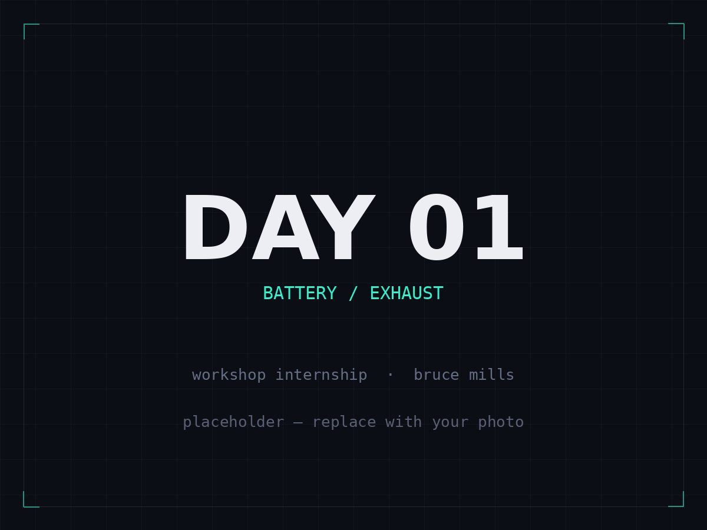
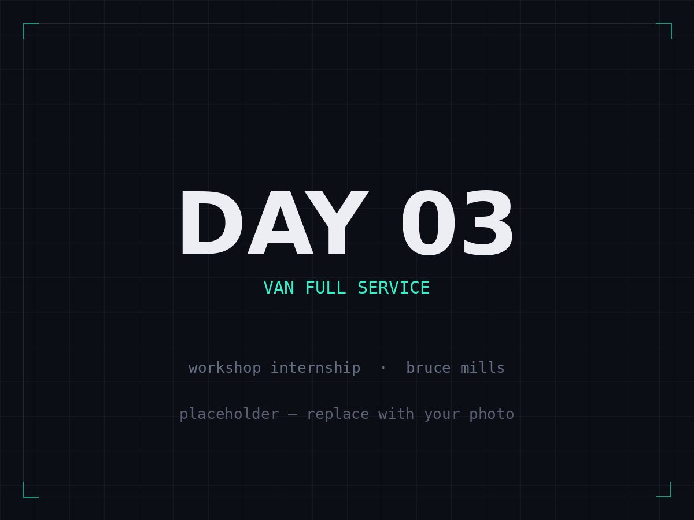
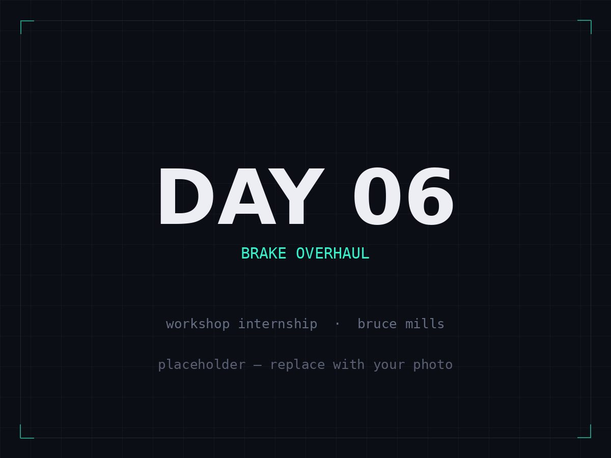
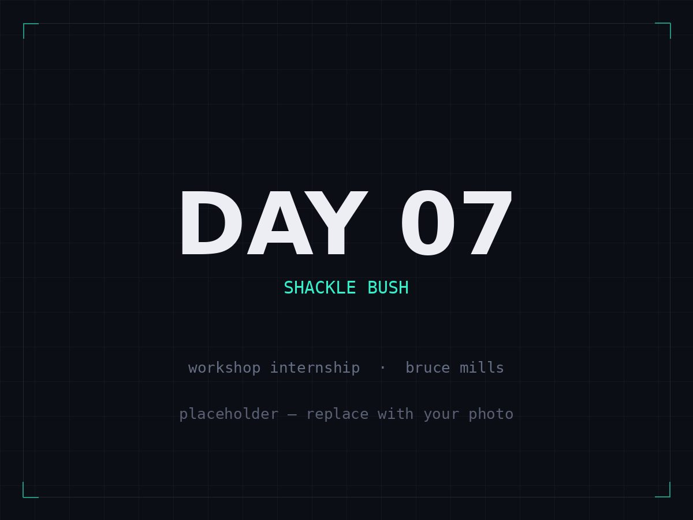
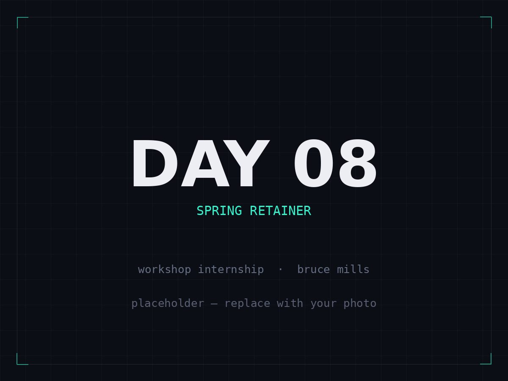
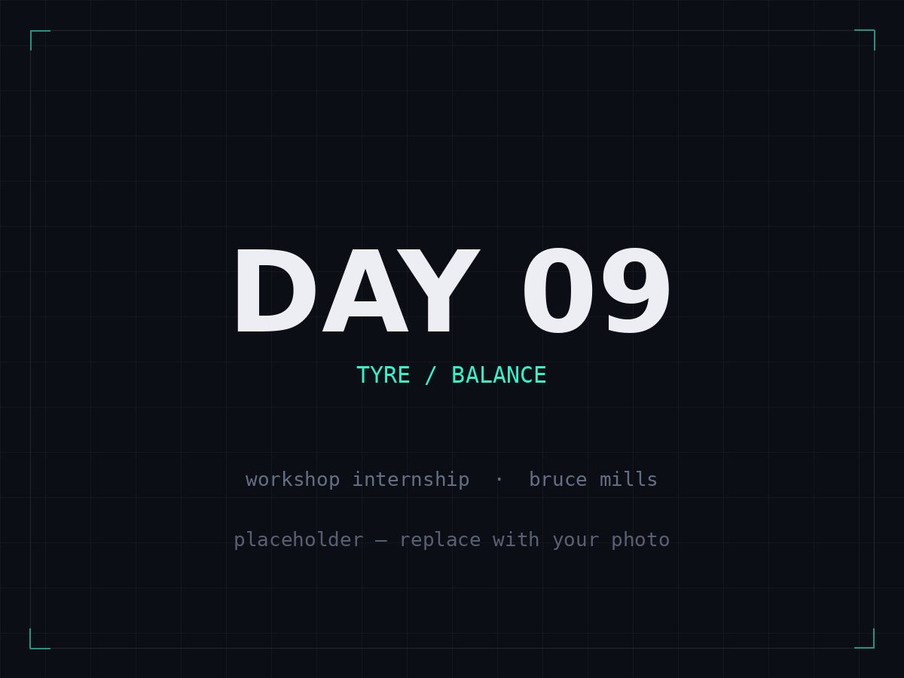
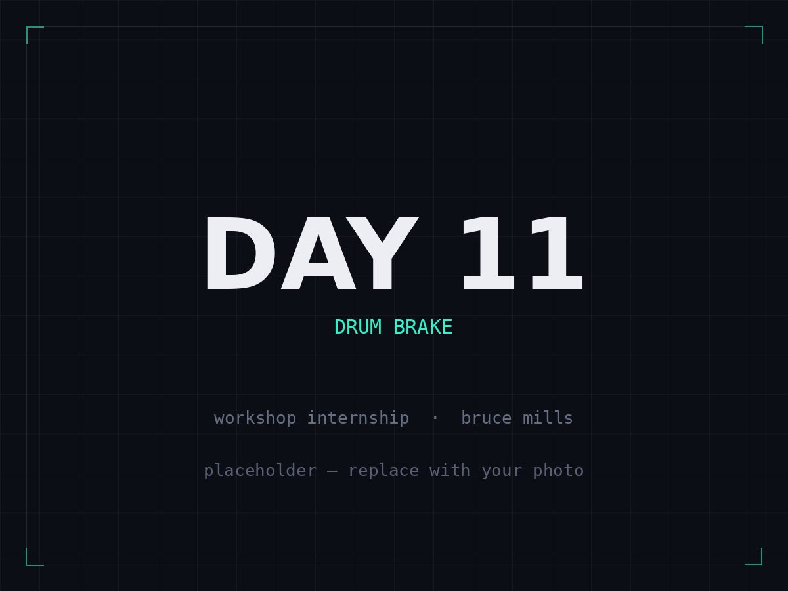
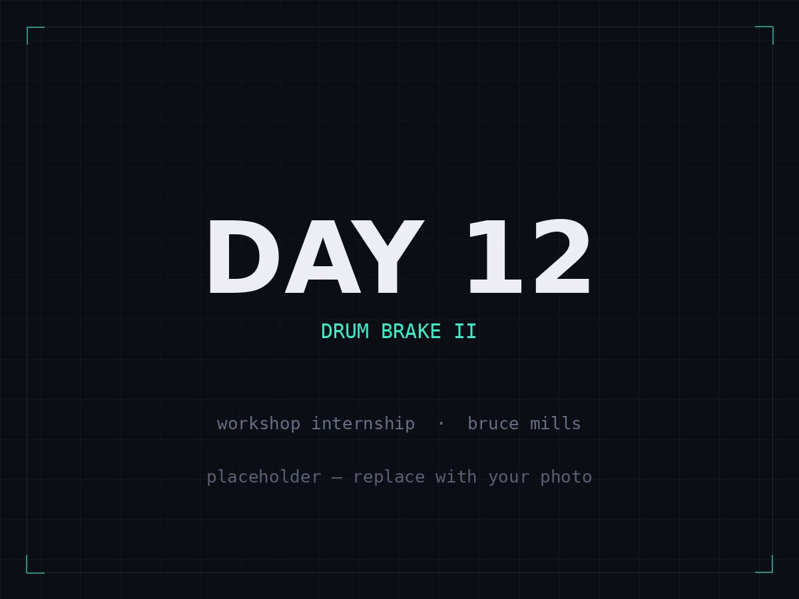
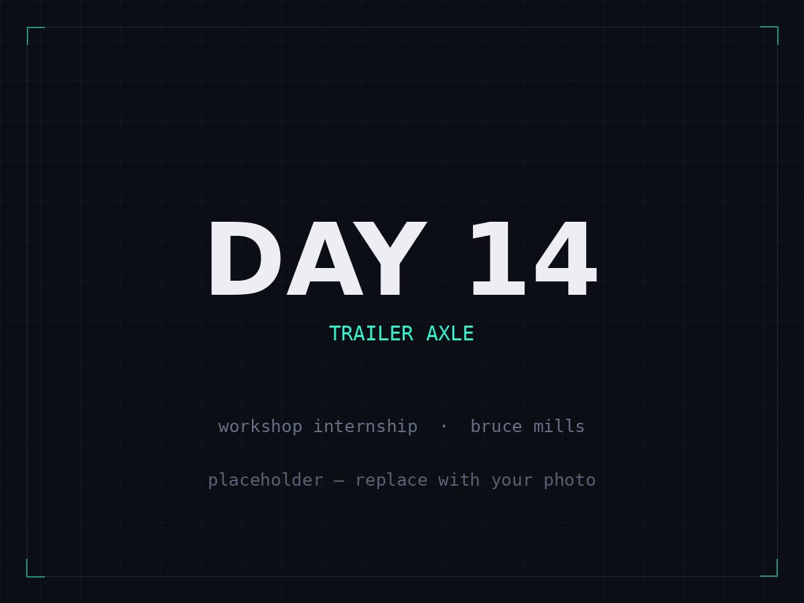
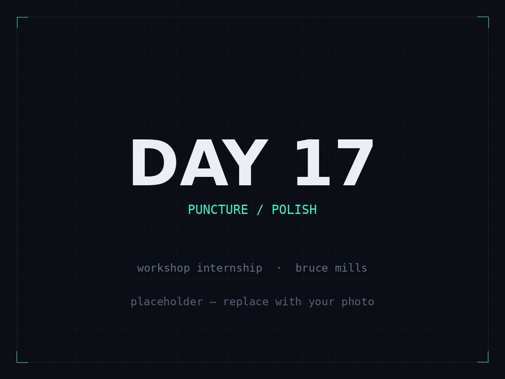

Mechanical Intern
Bruce Mills 2012 Ltd · Lower Hutt
- Independently completed Warrant of Fitness inspections and mechanical servicing across cars, vans and trucks, including brake and brake-cable replacements, oil and filter changes, and wheel servicing.
- Assisted senior mechanics on high-risk repairs involving welding, structural work and critical systems, building diagnostic exposure to cooling, electrical, and air and fuel delivery systems.
- Worked largely unsupervised with zero safety incidents, applying engineering principles, workshop safety practices, and structured problem-solving to diagnose and resolve faults.










Day 01 First day on the tools: jump-started a flat battery, refitted a loose exhaust, and got to know the workshop and the cars coming through.
Structural Team Member
University of Auckland Rocketry Club
Building high-powered rockets, with a focus on composite manufacture of structural components.
Events Executive
Startup Club UoA
Leading end-to-end event planning and logistics that connect students with the startup ecosystem.
Events Executive
Auckland University Indian Society
Coordinated cultural and social events, partnering with vendors and student leaders to drive engagement.
Youth Facilitator
Hindu Swayamsevak Sangh (NZ)
Led week-long youth camps and community sessions promoting leadership and cultural education.
B.E. (Hons), Mechanical Engineering
The University of Auckland
Coursework across finite element analysis, design and manufacture (CAD/CAM), control systems, materials mechanics, thermodynamics, fluid mechanics, dynamics, mechatronics, and engineering project management. Completed the Faculty of Engineering Development Leadership Programme (Core), and selected from hundreds of applicants to interview for DLP Elevate.